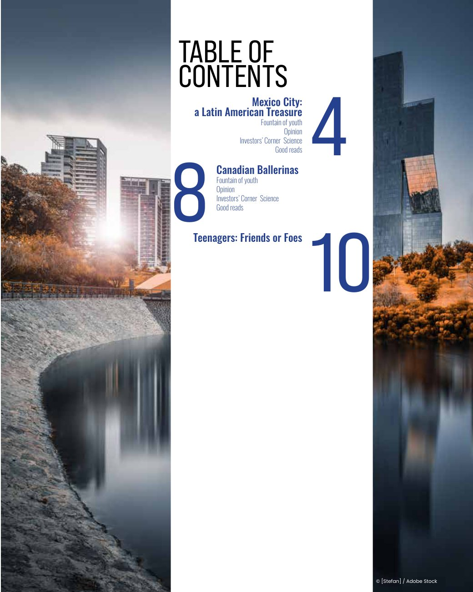
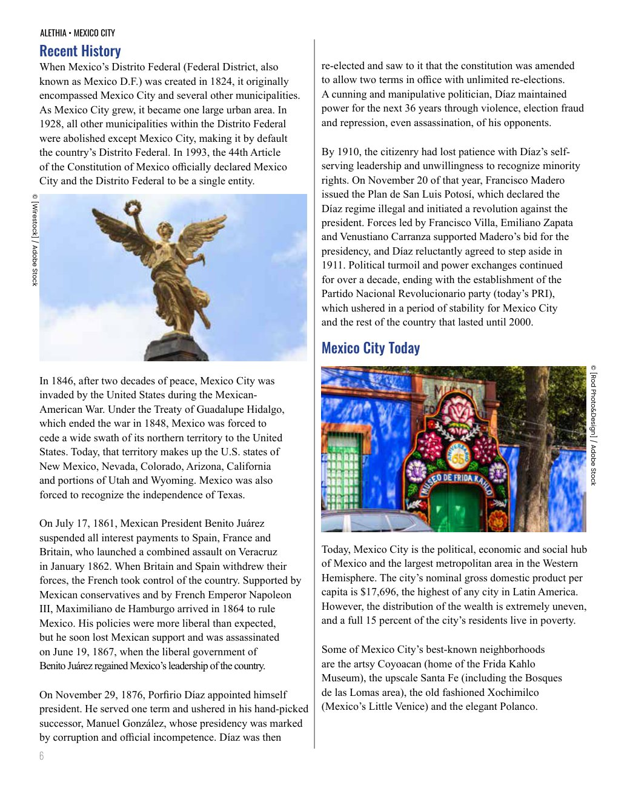
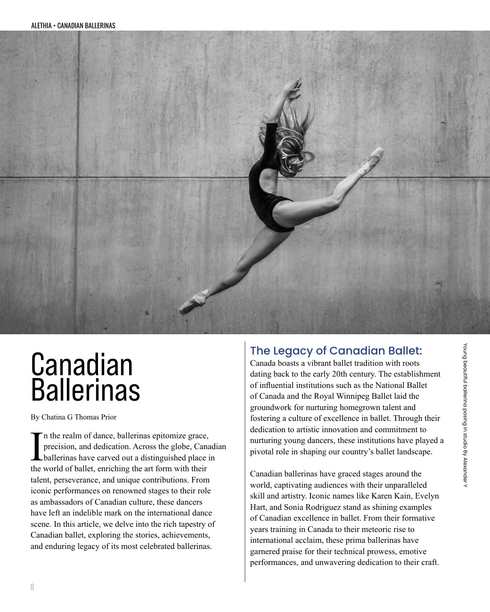
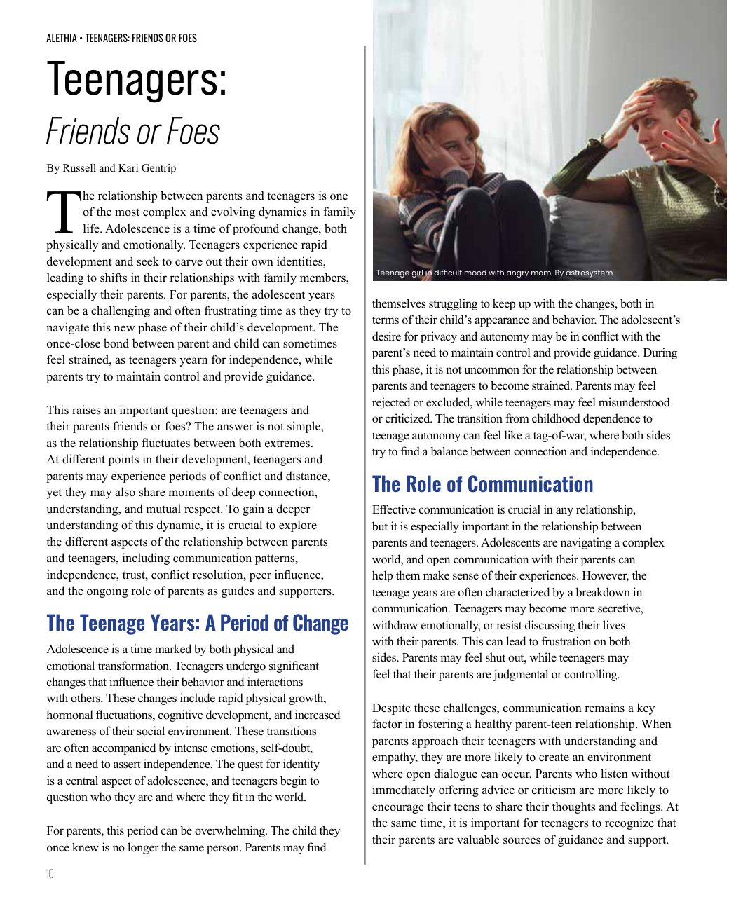
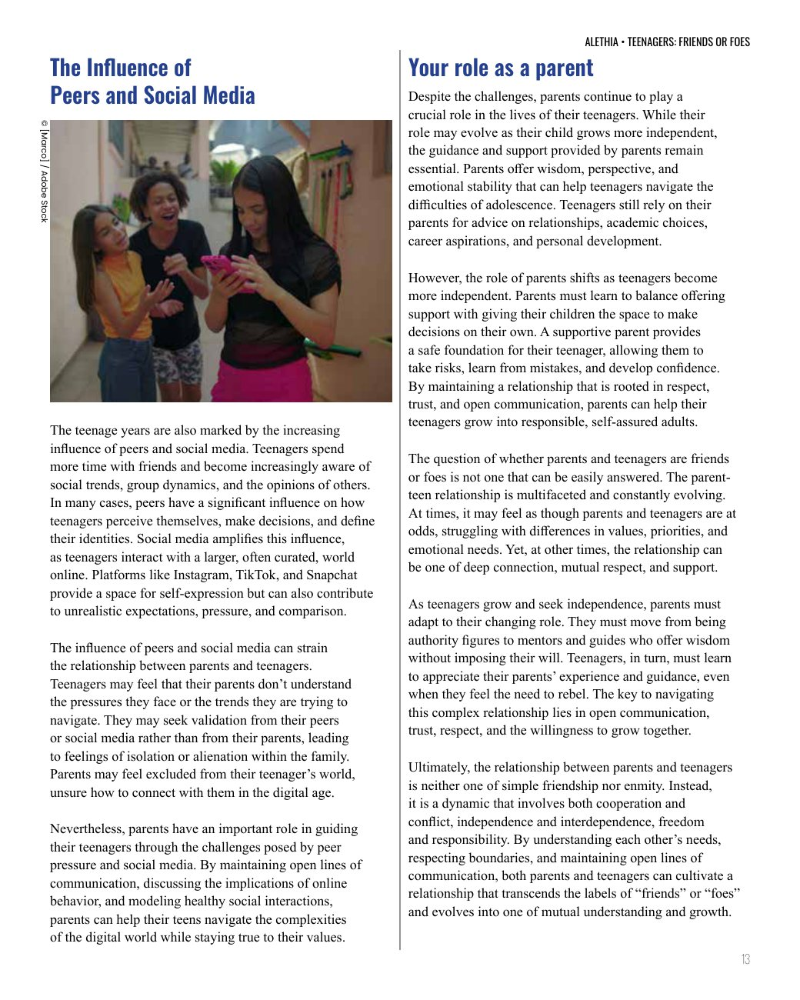

Editorial · Magazine Layout
A 16-page editorial magazine built around three feature stories — a chance to put typography, grid systems, and image-led storytelling into practice.
Editorial design, layout & typesetting
Adobe InDesign, Photoshop
BCIT Graphic Design
ALETHIA is a feature-driven magazine covering three very different stories — a travel piece on Mexico City, a culture feature on Canadian ballerinas, and an opinion essay on teenagers and social media. The brief: hold a consistent editorial system across wildly different content.
I designed the table of contents, feature openers, and interior spreads around a flexible multi-column grid, using scale, pull quotes, and generous white space to give each story its own rhythm while keeping the magazine feeling like one coherent publication.
Selected Pages




